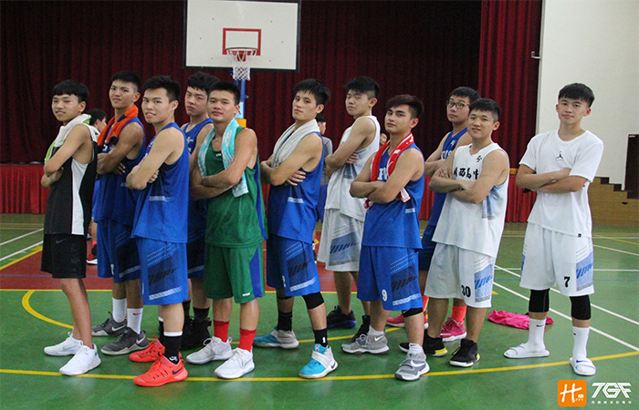

貼文時間：2017/09/12

天未亮，孩子們，搭上車，往夢想前進著。夢想起點 - 關西高中。 位於新竹綠野連綿的關西高中，松嶺黌高，校風純樸，但這孕育著的不凡的英雄們，更有著非凡情意的故事。
由於關西高中隸屬於較偏鄉的地帶，就籃球隊招生這部分而言十分不利，但李家瑋教練毫無怨言，他表示 : 「不管球隊多少的人，我都不會放棄這群孩子，就算球隊最後只剩下一個人，我也會堅持下去。」孩子們表示看見教練的不放棄並說道: 「我們別無選擇，我們只能跟著一起傻下去，因為我們有共同的夢。」
球隊主力林諺呈表示 : 「李教練很兇又很操，但我們都捨不得走，因為我們清楚地知道少一個人都稱不上是團隊了，想要進步就對自己狠一點，這樣才能逼自己努力。」
105學年度新竹縣高中乙組籃球聯賽，在面對竹東一役，林諺呈說道 : 「這是他高中生涯印象最深刻的一場，因為竹東高中教練給予他高度評價，那場恰巧竹東有兩個球員扭到，我一場竹東教練便緊張地吩咐叮嚀球員，要把我守死，弄下場。雖然我們最後還是輸球，但我覺得足夠了，因為我拚過了，我不在乎結局...。」
球隊大佬林均澄教練表示 : 籃球不可能永遠一直打，但可以回憶一輩子。學長姜浚淂衝著這句話，於是校際盃的雛型就這樣誕生了，近兩年關西高中暑假興辦校友盃盛事，邀請大學長們回歸母校，共襄盛舉此活動，藉由學長學弟間的比賽交流，傳遞故事，延續不滅精神，盼望提升球隊向心力及認同感，一步步建立關西高中球隊文化。
球隊短期目標放於今年的區預賽，教練團表示 :「我們不是傳統名校，加上我們的地理位置偏僻，說實在的收不到甚麼好的材，但學校很肯定我們，也為這些孩子們多開了體保生的名額，但我們不敢說大話，還是希望一步一步慢慢來打造我們的故事。」
關西高中，鎮守邊關，捍衛堡壘，現在的每一步都是成長的養分，不要等到失敗才後悔，也許路上很苦，但值得，締造出一幕幕令人感動的回憶，打造專屬故事，為青春增添美麗色彩....。 接下來讓我們一起期待新學年度的關西高中吧。